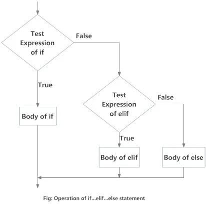

if
What is if...else statement in Python?
Decision making is required when we want to execute a code only if a certain condition is satisfied.
The statement is used in Python for decision making.if…elif…else
Python if Statement Syntax
if test expression:
statement(s)Here, the program evaluates the and will execute statement(s) only if the test expression
is.test expressionTrue
If the test expression is , the statement(s) is not executed.False
In Python, the body of the statement is indicated by the indentation. The body starts with an
indentation and the first
unindented line marks the end.if
Python interprets non-zero values as . and are interpreted as
.TrueNone0False
Flowchart

Example
Python if Statement
# If the number is positive, we print an appropriate message num = 3 if num > 0: print(num, "is a positive number.") print("This is always printed.") num = -1 if num > 0: print(num, "is a positive number.") print("This is also always printed.")When you run the program, the output will be:
3 is a positive number This is always printed This is also always printed.
In the above example, is the test expression.num > 0
The body of is executed only if this evaluates to .ifTrue
When the variable is equal to 3, test expression is true and statements inside the body of are
executed.numif
If the variable is equal to -1, test expression is false and statements inside the body of are
skipped.numif
The statement falls outside of the block (unindented). Hence, it is executed regardless of the test
expression.print()if
if-else
Python if...else Statement
Syntax of if...else
if test expression:
Body of if
else:
Body of elseThe statement evaluates and will execute the body of only when the test condition is
.if..elsetest expressionifTrue
If the condition is , the body of is executed. Indentation is used to separate the
blocks.Falseelse
Flowchart

Example
# Program checks if the number is positive or negative # And displays an appropriate message num = 3 # Try these two variations as well. # num = -5 # num = 0 if num >= 0: print("Positive or Zero") else: print("Negative number")Output
Positive or Zero
In the above example, when is equal to 3, the test expression is true and the body of is executed and
the of else is skipped.numifbody
If is equal to -5, the test expression is false and the body of is executed and the body of
is skipped.numelseif
If is equal to 0, the test expression is true and body of is executed and of else is skipped.
numifbody
if-elif-else
Python if...elif...else Statement
Syntax of if...elif...else
if test expression:
Body of if
elif test expression:
Body of elif
else:
Body of else
The is short for else if. It allows us to check for multiple expressions.
elif
If the condition for is , it checks the condition of the next block and so on.
ifFalseelif
If all the conditions are , the body of else is executed.False
Only one block among the several blocks is executed according to the condition.
if...elif...else
The block can have only one block. But it can have multiple blocks.
ifelseelif
Flowchart

Example
'''In this program, we check if the number is positive or negative or zero and display an appropriate message''' num = 3.4 # Try these two variations as well: # num = 0 # num = -4.5 if num > 0: print("Positive number") elif num == 0: print("Zero") else: print("Negative number")Output
Positive number
When variable is positive, is printed.numPositive number
If is equal to 0, is printed.numZero
If is negative, is printed.numNegative number
Nested if
We can have a statement inside another statement. This is called nesting in computer
programming.if...elif...elseif...elif...else
Any number of these statements can be nested inside one another. Indentation is the only way to figure out the level of nesting. They can get confusing, so they must be avoided unless necessary.
Example
programiz.com'''In this program, we input a number check if the number is positive or negative or zero and display an appropriate message This time we use nested if statement''' num = float(input("Enter a number: ")) if num >= 0: if num == 0: print("Zero") else: print("Positive number") else: print("Negative number")Output 1
Enter a number: 5 Positive numberOutput 2
Enter a number: -1 Negative numberOutput 3
Enter a number: 0 Zero